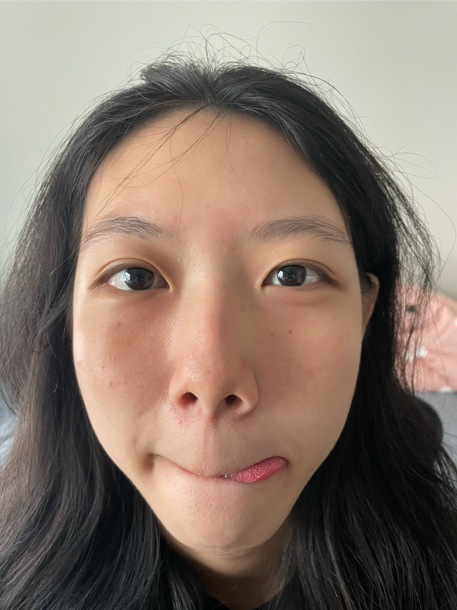
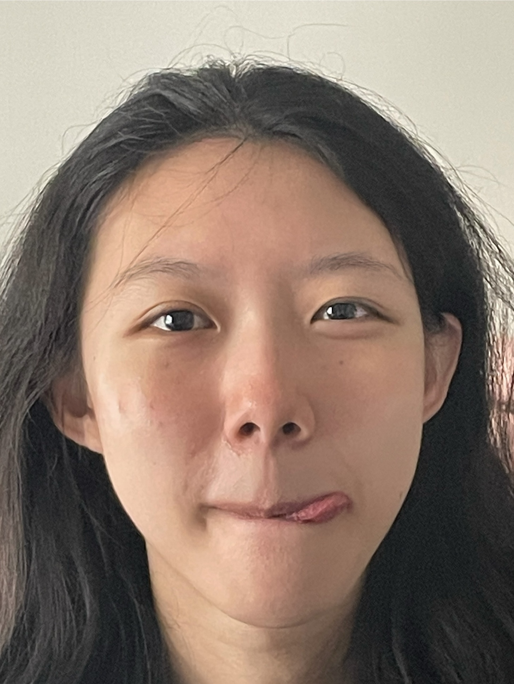
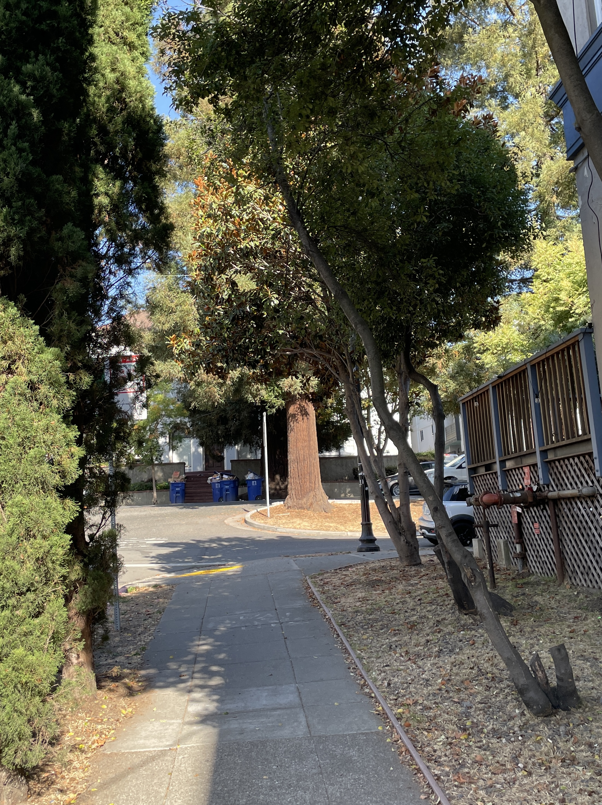
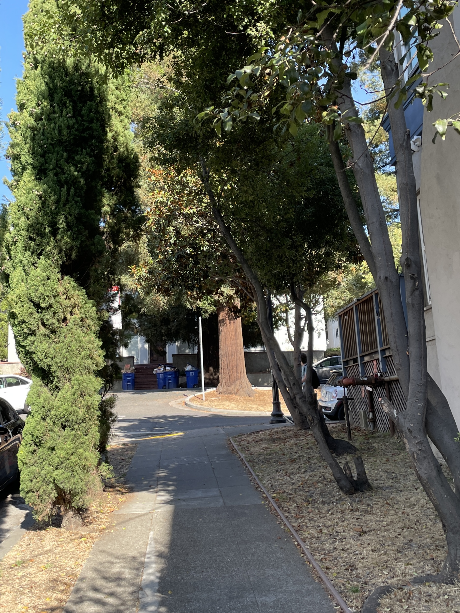
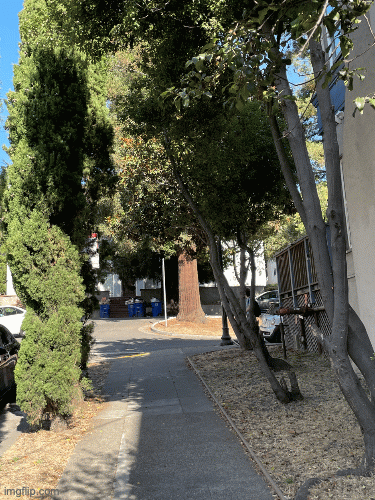

By Khoo An Xian
The goal of this project is to gain understanding of the relationship between perspective, focal length/zoom, and the center of projection.| Close Up | Zoom From Distance |
|---|---|
|  |  |
Perspective distortion increases as the face-to-camera distance decreases.
Close-up shots exaggerate depth differences between facial features. In my close-up selfie, the camera is positioned very close to my face. According to the pinhole camera model, features closer to the camera (eg. nose) project to a larger area on the image plane, while features that are farther from the camera (eg. ears) project smaller, resulting in an exaggerated or distorted appearance. When the camera is positioned farther away from me, the relative depth variation across my face becomes small compared to the camera-subject distance, reducing perspective distortion. In this set up, the camera uses a longer focal length to capture my face at the same image size, but with more accurate proportions.| Close Up | Zoom From Distance | Gif for Comparison |
|---|---|---|
|  |  |  |
Perspective compression of a scene increases with greater subject distance.
In the first photo, the camera is closer to the scene. Because the relative depth differences are larger compared to the camera distance, the same scene appears more spatially spread out, with greater apparent separation between the trees. In the second photo, the camera is further from the scene and is zoomed in. The relative depth differences between objects become smaller compared to the camera distance, and so the trees along the depth axis appear closer together on the image plane. As a result, the scene looks flattened or compressed.The Dolly Zoom works by moving the camera farther from the subject (dolly) while simultaneously adjusting the focal length (zoom). As the camera moves away, image of the subject is kept constant in scale but the background elements appear to compress forward. Applied to a Jenga tower, this effect emphasizes the height and instability of the stack, enhancing a sense of tension and precariousness in the scene.